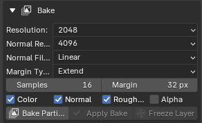

Bake¶
Applies to: Parting Placer V2.0.0 · Blender 4.4 · 5.2
Bake Partings renders your partings into image maps you can save and use elsewhere. Your partings stay live afterwards, so you can keep tweaking and bake again.
The box starts collapsed. Select the arrow beside Bake to open it.

The settings are greyed out until the head has a parting and a UV map.
Mirror Modifier Warning¶
This red warning appears at the top if the head has a Mirror modifier switched on for rendering. It reads: Mirror modifier — partings on the mirrored half share UVs and will be lost in the bake.
See Work On A Head With A Mirror Modifier for what to do.
Resolution¶
The size of the Color, Roughness and Alpha maps, in pixels: 512, 1024, 2048 or 4096. The default is 2048.
Normal Resolution¶
The size of the Normal map, set apart from the others. The Normal map carries the fine bump detail, so it benefits from more pixels. Options run from 512 to 8192. The default is 4096.
Normal Filtering¶
Shown while Normal is ticked. Linear or Cubic, applied to the normal pass only. Leave it on Linear. The README says Cubic makes the blockiness slightly worse.
Margin Type¶
How the margin is filled. Extend repeats the border pixels, which is what the tool has always done. Adjacent Faces samples across UV seams instead. The default is Extend.
Samples¶
How finely the bake is sampled. The default is 16. Raise it if your partings bake with small holes. Past 16 the gains fall off sharply while the bake keeps getting slower.
The README calls it Bake Samples.
Margin¶
How far the bake spreads past the edge of each UV island, in pixels, so seams don't show. The default is 32, from 0 to 64.
It also spreads the bump outside each parting by the same amount. Lower it to narrow that spread.
Color / Normal / Roughness / Alpha¶
Tick the maps you want. Color, Normal and Roughness are on by default. Alpha is off.
Alpha makes a coverage map: where your partings are, not what colour they are. You only need it for Save Transparent. With Color and Alpha both ticked, the bake takes two extra passes rather than one.
Normal only bakes while Live Bump is on. Live Bump starts off, so a first bake skips Normal unless you turn it on.
While Live Bump is off, the Normal tick box is greyed out and the bake skips it. If Normal is the only map ticked, the bake stops with Normal skipped: Live Bump is off. Turn it on to bake a Normal map.
Bake Partings¶
Renders the ticked maps. Baking again is safe: the new maps carry the old ones forward, even if you change the resolution.
It is greyed out while Preview is on. Select Disable Preview first. See Preview.
Once a bake exists, the save options appear underneath. See Saving Textures.
Include pending mirrors in bake¶
Select Bake Partings with mirrors still pending, and a dialog says how many. It offers this tick box. It is on by default, so pending mirrors bake along with your other partings.
Untick it to bake only the partings you have kept.
Apply Bake¶
Swaps the live partings for the baked images and deletes their Empties. This is the step that makes the hair ready for export. Press Ctrl+Z to undo it.
It is greyed out until you have baked, and while any mirrors are pending.
Blender asks you to confirm first. The status bar then says how many maps it applied and how many Empties it removed.
If your last bake had no Normal map, the confirm box warns you first. It reads Last bake had no Normal map: parting relief will be lost. An older Normal map may still be there. Then it reads Last bake skipped Normal: an older Normal map will be used.
Freeze Layer¶
Takes your last bake as a checkpoint and clears the partings so far, so you can keep placing on top. Frozen work stays in your maps however many times you bake afterwards. Use it when a set of partings is settled.
Select Bake Partings first. Freeze Layer reuses that bake and does not bake on its own.
You can freeze 3 times per material. When you place more partings after a freeze, the button counts your freezes, for example Freeze Layer (1/3). It is greyed out while any mirrors are pending.
After a freeze, the frozen partings show on the head as part of the baked image. Their Empties are gone. The list starts empty again.
Its confirm box carries the same Normal map warning as Apply Bake.
Mesh has no UV map¶
Shown at the bottom of the box when the head has no UV map. Baking needs one. Add a UV map to the head, then come back.
If You're Stuck
- Bake Partings is greyed out? See Bake Partings Is Greyed Out Or Refuses.
- Small holes or dark speckles in the maps? See Partings Bake With Small Holes In Them.
- Freeze Layer is greyed out? See Freeze Layer Is Greyed Out.
Recommended next: Saving Textures